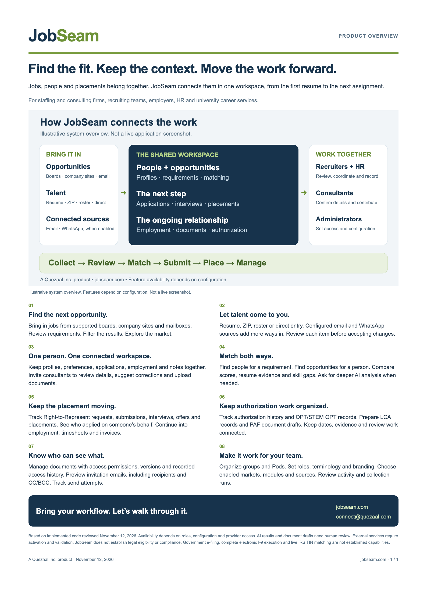
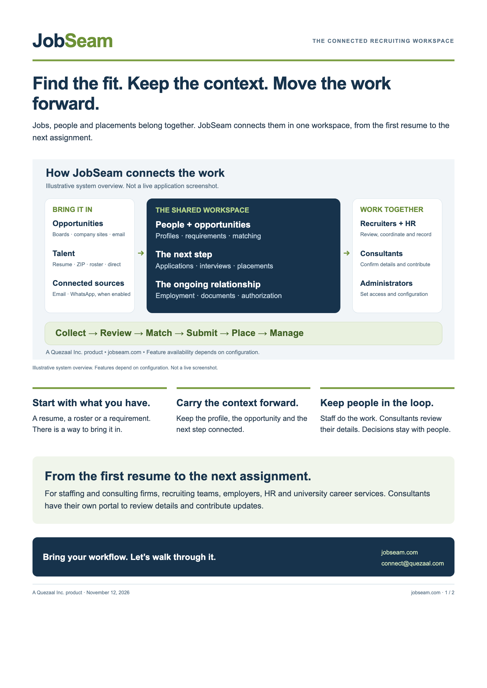
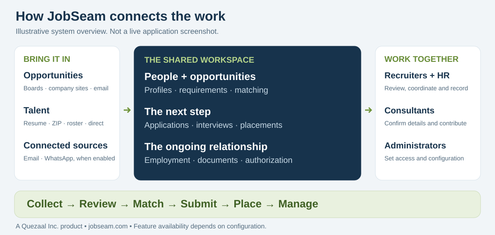

JOBSEAM · A QUEZAAL INC. PRODUCT
Find the fit. Keep the context.
Move the work forward.
Jobs, people and placements in one workspace. Choose a quick overview or a two-page walkthrough to share with your team.
The one-page overview
Eight capability summaries. One system visual. A quick introduction.

Editable MarkdownThe two-page flyer
The story on page one. More detail on page two.

Editable MarkdownSee how the work connects
